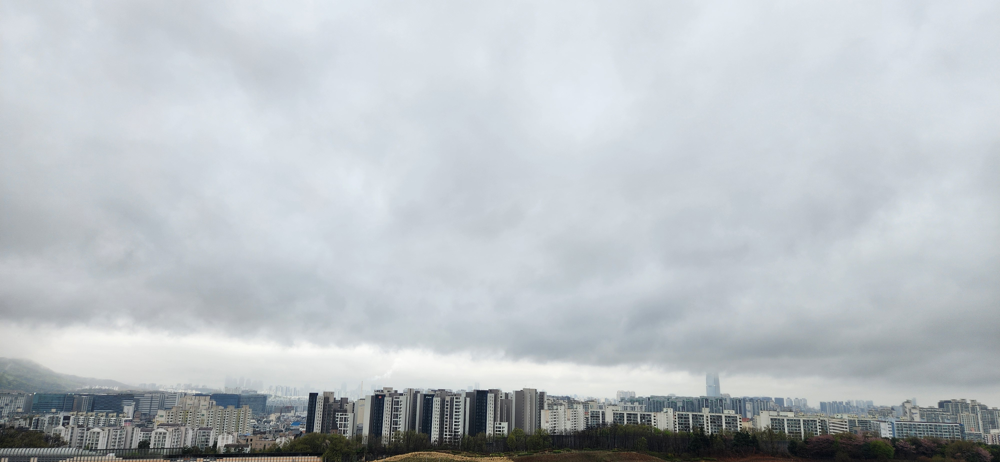

Descriptive Script
짙은 회색빛 구름이 낮게 드리운 도시의 풍경입니다.
금방이라도 비를 머금은 듯 무겁게 내려앉은 하늘은 대지를 압도하며 차분한 분위기를 자아냅니다. 지평선을 따라 끝없이 이어진 아파트 단지들은 정교한 격자무늬를 그리며 도시의 밀도를 보여주고, 무채색의 건물들 사이로 드문드문 보이는 초록빛 숲은 잿빛 도시에 작은 생동감을 불어넣습니다.
저 멀리 안개와 구름 사이로 희미하게 솟아오른 고층 타워는 현실과 비현실의 경계에 서 있는 듯 몽환적인 느낌을 줍니다. 소음조차 구름 속에 잠겨버린 것 같은 고요한 오후, 도시는 폭풍 전야의 정적처럼 깊은 숨을 고르고 있습니다.
웅장하면서도 쓸쓸함이 감도는, 현대 도시의 고독하고도 평온한 일면을 담아낸 순간입니다.
Audio Narration
The script has been synthesized into a professional narration.